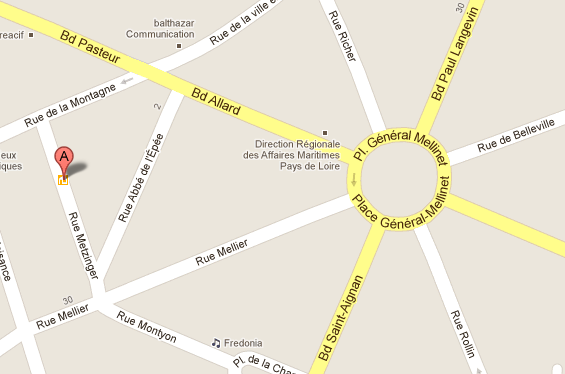

14 bis rue Metzinger
La maison se visite sans chaussure. Après la zone de déchaussage, on a le droit de se promener pied nu, en chaussettes, en chaussons, etc. au choix.
The house is shoe free. After passing the Shoe Removal Spot, bare feet, socks, slippers, etc. are encouraged.